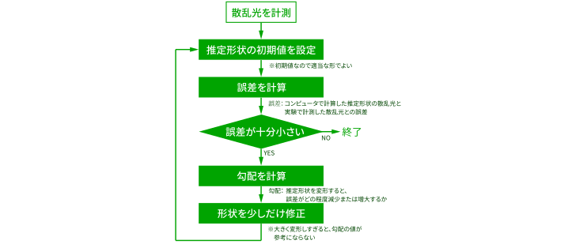

光計測
顕微鏡は物体を拡大してみることができます。これは、物体からの光をレンズで屈折させ、元よりも大きな像を作っているためです。レンズの組み合わせ次第で拡大倍率を上げることができますが、これには限界があり、照明光の波長より小さい物体の像は作れません。これを回折限界といいます。
レーダーやX線CTのように、物体からの光（電磁波）をコンピュータで処理して、物体の形を推定する技術が多く考案されており、一般に逆散乱問題と言われています。
X線で照明する場合、物体が非常に薄い場合は、散乱や回折の効果が小さいため、物体の形を推定することは比較的容易です。そうでない場合は、複雑で強い散乱が発生するため、推定は難しくなります。
この研究室では、物体の形と散乱光の関係をシンプルに表してくれる「積分方程式」を使って推定を行います。計算を反復し（繰り返し）ながら推定形状を少しずつ正確なものに近づけていきます。

数回の反復処理で、ほぼ正確な形状が推定できています。この物体は顕微鏡の解像度では計測不可能なサイズで、回折限界を超えた計測が可能であることを示しています。